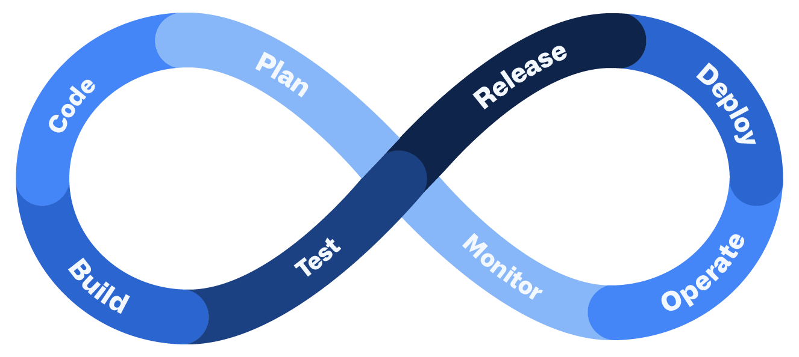

Introducción a Dev(Sec)Ops
Para comenzar, vamos a introducir los conceptos DevOps y DevSecOps para obtener una idea general, que iremos profundizando poco a poco a lo largo del libro. Describiremos los distintos conceptos más detalladamente cuando llegue su momento. Por un lado, presentaremos la parte teórica para, por otro lado, completarlo todo con GitHub Actions.
Al finalizar, sabrá:
-
Qué es y en qué consiste DevOps y DevSecOps.
-
Qué es un ingeniero o ingeniera DevOps.
-
Qué es CI/CD.
-
Cuáles son las métricas más comunes usadas en DevOps.
-
Qué son los KPIs.
-
Qué herramientas de GitHub utilizar en Dev(Sec)Ops.
Introducción
La competitividad (competitiveness) es la capacidad de competir. Cada día que pasa es más feroz y obliga a las organizaciones a tener que adaptarse y entregar productos y servicios más rápidamente. Ya no basta con solventar los problemas de los usuarios, sino que también hay que entregar los cambios a una velocidad relámpago. Esto no es algo específico de la industria del software, sino de cualquiera. La capacidad de acelerar los procesos y ser más rápidos que los competidores es una condición necesaria, aunque no suficiente, para mantenernos en la pugna. Tenga en cuenta que el tiempo promedio de duración de una empresa está cayendo. Por lo que debemos ser altamente competitivos y esto pasa por tener la capacidad de entregar nuevas versiones de un producto tan rápidamente como sea posible.
La esperanza de vida (lifespan) es el tiempo medio de vida de algo. Todo depende, pero las cifras no son nada halagüeñas. La esperanza de vida de las empresas españolas es de poco más de diez años. El de las europeas, ronda los trece años. Aun más grave es el de las conocidas empresas de fin de semana (weekend businesses), aquellas que resultan de la conjunción de emprendedores e inversores para poner una idea en marcha en eventos tecnológicos conocidos como iweekends. Por lo general, no superan los dos años de vida, ya sea porque la idea no tiene futuro o porque requiere más recursos de los esperados.
DevOps (Development/Operations, Desarrollo/Operaciones) es un modelo o movimiento organizativo y cultural que tiene como objeto aumentar la calidad del software, la confianza en los servicios y la velocidad de entrega y despliegue. Consiste en una filosofía y unas prácticas de trabajo, así como un conjunto de herramientas para el desarrollo, el mantenimiento y la operación o explotación de nuestros servicios. Ayudan a mejorar la competitividad y la velocidad de desarrollo. Observe la siguiente imagen ampliamente utilizada para explicar las distintas fases del desarrollo usando DevOps:

La idea es crear equipos multidisciplinares, es decir, que abarquen varias disciplinas o áreas, además de reducir los malos entendidos entre los equipos de desarrollo y operaciones. Para ello, los equipos de desarrollo, pruebas y operaciones se unen y alinean para trabajar conjuntamente, manteniendo todas sus tareas en un registro común, en vez de tener equipos de desarrollo, pruebas y operaciones separados y con escasa comunicación entre ellos. Los equipos deben trabajar juntos en un bien común, con objeto de ser más competitivos, eficientes y efectivos, además de incrementar nuestra agilidad, seguridad y calidad. Todos debemos enfocarnos en el rendimiento y la estabilidad del sistema.
Qué aspectos incluye:
-
Planificación ágil.
-
Desarrollo del software.
-
Integración continua de cambios.
-
Entrega continua del software.
-
Calidad (QA, Quality Assurance).
-
Explotación del software en producción, también conocido como operaciones, donde encontramos, por ejemplo, monitorización y configuración.
Sus principales características son:
-
Alinear o unificar el desarrollo, el despliegue y la operación o explotación del software.
-
Acortar o reducir los ciclos de desarrollo con objeto de incrementar la frecuencia de despliegue, en otras palabras, entregar software con más frecuencia y de manera más rápida.
Si conseguimos entregar con más frecuencia, obtendremos el feedback más rápidamente. No olvidemos que ese feedback lo usaremos para mejorar el producto y nuestros procesos. No es lo mismo hacer algo y ponerlo a disposición de los usuarios en unos días o pocas semanas que en unos meses. La idea es seguir mejorando y aprendiendo constantemente. Las metodologías ágiles como Scrum ayudan considerablemente.
Al desplegar constantemente podríamos empezar a disponer de un MVP a partir del cual comenzar a recibir feedback lo antes posible. Un MVP (minimum viable product, producto viable mínimo) es un prototipo que dispone de las características suficientes para satisfacer a los clientes iniciales y así poder aprender y recibir comentarios y sugerencias para avanzar más adecuadamente.
-
Mejorar la calidad del producto, reduciendo las incidencias de producción así como incrementando la calidad del software desarrollado.
-
Automatizar el proceso todo lo posible, tanto a nivel de desarrollo, integración, despliegue y operación o explotación.
La automatización (automation) consiste en convertir tareas o procesos manuales en automáticos. Esta automatización ayuda, por un lado, a comprender el proceso detenidamente, pues para automatizarlo lo primero es entenderlo. Y por otra parte, reduce el tiempo al suprimir los tiempos muertos debido a actuaciones manuales. Es un aspecto imprescindible en DevOps.
-
Reducir los silos que producen algunas organizaciones, con el objetivo en mente de que todos los equipos trabajen por un bien común, comprendiendo todos ellos las necesidades de todos y ayudándose los unos a los otros para conseguirlo. En otras palabras, que exista un equipo único y cohesionado. El producto y su calidad son cosa de todos.
DevOps se puede utilizar tanto en el desarrollo de bibliotecas como de aplicaciones o servicios de software. Atendiendo a qué estemos desarrollando, adaptaremos DevOps a nuestras necesidades.
Actualmente, son muchas las organizaciones que han adoptado DevOps, independientemente de su tamaño: Algorand, Amazon, BBVA, BitTorrent, Capital One, Glovo, Google, IBM, ING, IoTeX Network, Liberty Mutual, Microsoft, Mozilla, Nasa, Netflix, Nike, OVHcloud, Python Software Foundation, Red Hat, Reef Chain, Sainsbury’s, Starbucks, Swiss Re, Telefónica, 3M, entre otras.
No hay que olvidar los servicios de monitorización e IaC (Infrastructure as Code) que son también indispensables en el área de operaciones o explotación. IaC consiste en automatizar y validar la creación y la destrucción de entornos como, por ejemplo, de producción o pruebas.
El uso de plataformas de automatización, como GitHub Actions, en vez del uso de servidores específicos de nuestra organización, tiene, entre otras ventajas, las siguientes:
-
Reduce el coste operacional.
-
Escalan automáticamente cuando incrementa la carga.
-
Realizan copias de seguridad automáticamente.
-
Realizan actualizaciones automáticas de sus servidores.
-
Algunos de ellos suelen mantener cifrados nuestros archivos en los servidores.
-
Proporcionan alta disponibilidad.
-
Suelen proporcionar herramientas que facilitan la colaboración del equipo.
-
Tienen la capacidad de generar notificaciones cuando se producen ciertos eventos que podemos utilizar para la ejecución automática de tareas como, por ejemplo, la integración continua, la entrega continua o el despliegue continuo.
Ingeniero o ingeniera DevOps
Actualmente, se habla de ingeniero o ingeniera DevOps (DevOps engineer) para hacer referencia a una persona que desarrolla y opera, es decir, tiene la formación y experiencia para realizar trabajos de desarrollo, pruebas y operación. En definitiva, es capaz de comprender y ejercer cualquier rol DevOps. Básicamente, en Node.js esto quiere decir:
-
Saber programar bien en JavaScript o en un lenguaje que transpile a este lenguaje como, por ejemplo, TypeScript.
-
Saber realizar pruebas de unidad, integración y sistemas. Para ello, como mínimo, hay que conocer: algún motor de pruebas como Mocha o Jest; alguna biblioteca de aserción como @akromio/expected o Chai; alguna biblioteca de dobles de pruebas como @akromio/doubles o Sinon; alguna herramienta para ejecutar pruebas de carga como Akromio o Artillery; alguna herramienta de análisis estático de código como ESLint o CodeQL; y cómo publicar paquetes en NPM.
-
Saber automatizar trabajos, en nuestro caso, con GitHub Actions.
-
Saber trabajar con Git.
-
Ser organizado y saber administrar el trabajo, por ejemplo, con GitHub Projects y GitHub Issues.
-
Conocer UML para diseñar soluciones.
Todo esto sin considerar los aspectos adicionales si desarrollamos aplicaciones de cloud.
Métricas
Una métrica (metric) es una medida que sirve para medir algún aspecto importante del negocio. No olvide la máxima del físico y matemático británico, Lord Kevin:
Lo que no se define no se puede medir. Lo que no se mide no se puede mejorar. Lo que no se mejora se degrada siempre.
Las métricas nos ayudarán a centrarnos en aquello que es relevante, a validar la calidad de nuestros procesos y a tomar decisiones para optimizarlos.
En DevOps, existen varias métricas que debemos conocer, pues proporcionan información valiosa de cómo estamos trabajando. Son métricas que deberíamos recopilar con objeto de mejorar y garantizar que las cosas van bien. Si no recopilamos estas métricas, será más difícil demostrar que estamos trabajando correctamente ante la cúpula directiva, los mandos intermedios e incluso clientes y usuarios. No se recolectan sólo por el bien de la organización, sino también por el de los equipos y las personas que forman parte de ellos. La idea es recopilar información, observar qué está sucediendo y determinar qué deseamos y trabajar para conseguirlo.
DORA es el acrónimo de DevOps Research & Assessment (Investigación y Evaluación de DevOps). Es una organización que analiza el estado de DevOps y define, tras el análisis de cómo se está aplicando en distintas organizaciones, varias métricas que deberíamos tener en cuenta. A estas métricas, se las conoce formalmente como métricas DORA (DORA metrics). Las clasifica en métricas de rendimiento y operacionales.
Métricas de rendimiento
Las métricas de rendimiento (throught metrics) tienen como objeto ayudarnos a evaluar y analizar nuestro proceso de desarrollo y de entrega, así como la calidad del producto. Ayudan a conocer la velocidad con la que ponemos los cambios a disposición de los usuarios. Tenemos la frecuencia de entrega, el tiempo de espera para cambios, el tiempo de reparación y la tasa de fallo de cambio. Para estas métricas, la automatización es clave.
La frecuencia de entrega (delivery frequency) o frecuencia de despliegue (deployment frequency) está relacionada con el número de veces que desplegamos el producto en producción por unidad de tiempo. En caso de una biblioteca, cuántas veces por unidad de tiempo la publicamos en el registro, como por ejemplo NPM, para su utilización por la comunidad. Y en el caso de una aplicación o servicio, cuántas veces por unidad de tiempo la ponemos en producción para su uso por parte de los usuarios. No es lo mismo desplegar una aplicación o servicio móvil que una web o una biblioteca.
Unos ejemplos de esta métrica serían tres veces por semana o diez veces al mes.
Cuanto más automatizados tengamos los procesos más fácil será reducir el tiempo de espera e incrementar la frecuencia de entrega. No hay que pedirle peras al olmo, es decir, no hay que pedir lo imposible. Hay que decidir una frecuencia de entrega y un tiempo de espera posible y, entonces, trabajar para alcanzarlo.
El tiempo de espera (lead time) hace referencia al tiempo que pasa desde que nos ponemos a trabajar en algo, terminamos y llega al usuario, es decir, cuánto tiempo nos cuesta realizar algo y ponerlo a disposición de nuestros usuarios. Concretamente, en DORA, se hace hincapié en el tiempo de espera para cambio (lead time for changes), aquel que transcurre desde que hemos terminado de implementar algo y llega al usuario, es decir, desde que tenemos el cambio en el repositorio y el usuario puede hacer uso de él. Se mide principalmente en horas o días. La idea es determinar a qué velocidad deseamos hacer las entregas e intentar que el promedio del tiempo de espera de entrega se ajuste. Esto significa que deberíamos poder determinar este tiempo para cada trabajo que realizamos.
El tiempo de espera es muy importante tanto en los bugs como en la aportación de feedback de los usuarios. Lo que ayuda a desarrollar el producto que el usuario desea. Es posiblemente una de las más importantes porque ayuda a centrar nuestros esfuerzos en lo que realmente desean.
El tiempo medio de reparación (mean time to repair o MTTR) es el tiempo que transcurre desde que identificamos un problema, lo resolvemos y los ponemos a disposición de los usuarios. Representa el tiempo que estará inactivo el sistema en caso de fallo o el que tardamos en volver a estar en condiciones operativas normales. Como puede imaginarse, debe ser lo más pequeño posible. Se suele medir en minutos u horas. Valores mayores suelen ser peligrosos. Cada organización debe determinar cuál es el tiempo aceptable para su proyecto.
Finalmente, la tasa de fallo de cambio (change fail rate) viene a indicar algo tan sencillo como el porcentaje de fallos que se han debido a cambios en el software, es decir, que dados los cambios realizados, que porcentaje de ellos han acabado generando degradación, fallos o bugs importantes en el software. Lo ideal es que las entregas no generen fallos en producción pero, como somos humanos, es posible. Pero para poder detectar que estamos haciendo algo mal, es necesario saber cuándo se producen estos fallos. Si se produce uno al año, no será lo mismo que uno cada dos entregas.
Una vez recabados los datos de estas métricas, lo siguiente es presentarlas y conocer en qué estado nos encontramos. Para ello, DORA proporciona los siguientes niveles de mejor puntuación a peor:
| Métrica | Alto | Medio | Bajo |
|---|---|---|---|
| Frecuencia de despliegue | Bajo demanda o una vez al día | Una vez a la semana o al mes | Una vez cada seis meses |
| Tiempo de espera para cambio | Menos de una semana | Entre una semana y un mes | Entre un mes y seis meses |
| Tiempo medio de reparación | Menos de un día | Entre un día y una semana | Entre una semana y un mes |
| Tas de fallo de cambio | Menos del 15% | Menos del 30% | Menos del 60% |
Métricas operacionales
Las métricas operacionales (operational metrics) son aquellas que describen el rendimiento del sistema en producción. Concretamente, DORA define la métrica de fiabilidad (reliability metrics), con la cual conocemos la disponibilidad del servicio, su rendimiento, la latencia y la escalabilidad. La idea es saber cómo de bien está desplegado el servicio y cómo de bien atiende las necesidades de los usuarios.
Groso modo, podemos describirla mediante los siguientes aspectos:
-
La disponibilidad del servicio (service availability). Indica el tiempo que el servicio, por ejemplo una aplicación desplegada en una plataforma cloud como AWS, Azure o Google Cloud, está disponible sin interrupciones. Se recomienda que sea 99.999% del tiempo, conocido formalmente como los cinco nueves (five 9s).
-
El tráfico y uso del servicio (service usage and traffic), el cual indica el número de usuarios que tiene el servicio y el ancho de banda que consumen sus peticiones. Ya no basta con hacer software, también debemos saber cómo consume los recursos contratados, porque pueden incrementar considerablemente los costes de la organización.
KPIs
Es muy recomendable que además de usar métricas para evaluar cómo está siendo nuestro rendimiento o desempeño, también definamos KPIs. Un KPI (key performance indicator, indicador clave de desempeño) no es más que una objetivo que deseamos cumplir con el objeto de medir el desempeño o rendimiento de algún proceso. Estos indicadores se utilizan en multitud de áreas como, por ejemplo, el marketing, las finanzas, el servicio de atención al cliente y, como no podía ser menos, en IT. En nuestro caso, nuestra intención es fijar algunos objetivos que nos permitan comprobar el estado de nuestro ciclo de desarrollo Dev(Sec)Ops. Estos KPIs deben presentar las siguientes características, conocidas formalmente como SMART de su acrónimo en inglés:
-
Deben ser específicos (Specific), es decir, muy concretos y nada abstractos. La abstracción puede dar pie a interpretaciones subjetivas que podrían conducir a malas interpretaciones.
-
Deben ser medibles (Measurable), es decir, tienen que poder medirse.
-
Deben ser alcanzables (A**chievable), o sea, tenemos que poder alcanzarlos. No tiene ningún sentido definir **KPIs que no podamos cumplir.
-
Deben ser relevantes (Relevant), esto es, importantes y aportar información para, así, poder determinar si vamos por el buen o el mal camino.
-
Deben tener un intervalo de tiempo (Timely) en el que medirlos y comprobarlos.
En resumen, debemos definir KPIs concretos, medibles en un intervalo de tiempo y que sean relevantes para los objetivos que deseamos alcanzar. Teniendo en cuenta los KPIs y las métricas, debería resultar fácil poder determinar, sin miedo a equivocarnos, si estamos trabajando bien o mal y qué podemos mejorar para ser más productivos y eficientes.
He aquí algunos ejemplos de KPIs:
-
Durante el próximo trimestre, hay que realizar un despliegue cada semana.
-
Hay que reducir en un 25% los errores en los despliegues a producción durante el próximo trimestre.
-
Al finalizar el trimestre, debemos haber alcanzado el 95% de cobertura de código en cada uno de los repositorios del proyecto.
Productividad y eficiencia
Hoy en día, las organizaciones y los países hacen mucho hincapié en términos como productividad y eficiencia. Son medidas muy relacionadas con la producción.
Básicamente, la producción (production) consiste en la fabricación o creación de algo, ya sea un producto de software, de hardware u otra cosa. En economía, está fuertemente relacionado con crear bienes o servicios que generen valor económico o agregado a la organización y/o país. La eficiencia (efficiency) es la capacidad de producir algo con la menor cantidad de recursos posible y que cumpla con lo esperado o deseado. Por su parte, la productividad (productivity) es la relación entre lo producido y los recursos necesarios para ello. Cuanto menores sean estos recursos, más productivos seremos y, entonces, sin miedo a equivocarnos, podemos decir que somos más rentables. Por lo tanto, podemos decir que la productividad evalúa nuestra capacidad de producir cosas además de los recursos invertidos para ello.
Lo ideal es ir mejorando año a año y producir lo mismo con menos o producir más con lo mismo. Por lo general, la automatización incrementa considerablemente la productividad y el crecimiento.
Algunas organizaciones internacionales como la OCDE u Organización para la Cooperación y el Desarrollo Económicos (Organisation for Economic Co-operation and Development) y el FMI o Fondo Monetario Internacional (International Monetary Fund) definen indicadores relacionados con la productividad de los países. Por ejemplo, el producto interior bruto o PIB (gross domestic product o GDP) representa el valor monetario de la producción de bienes y servicios de un país, comprados por los usuarios finales, durante un período de tiempo, generalmente, un año. En 2022, los países con mayor PIB son, según el FMI y el Banco Mundial, Estados Unidos, China, Japón, Alemania y Reino Unido. España aparece en el puesto 14; y algunos de nuestros vecinos como Francia, Italia y Portugal en los puestos 7, 8 y 47, respectivamente.
Otro indicador importante es el PIB por hora trabajada (GDP per hour worked) que mide, en dólares, la productividad laboral y la eficiencia de la mano de obra con factores de producción. Se define como el número total de horas trabajadas de todas las personas involucradas en la producción y refleja, parcialmente, la productividad en términos de capacidades personales de los trabajadores y el esfuerzo que deben realizar. El promedio de la OCDE para 2021 fue de 107.4 dólares. Irlanda con 136.4, Rumanía con 133.4, Costa Rica con 122 y Eslovenia con 114.9 se encuentran por encima. Mientras que países como Japón con 102.4, España con 99.2 y México con 94.9 se encuentran por debajo de este promedio de la OCDE.
Sistemas de control de versiones
Una de las principales prácticas usada en DevOps es el control de versiones del código. Siendo Git el sistema más utilizado y aceptado hoy en día. Son muchos los proveedores de este tipo de sistemas como, por ejemplo, Bitbucket, GitHub y GitLab. En nuestro caso, nos centramos en GitHub.
Organización del trabajo
La organización del trabajo (work organization) está relacionada con el establecimiento y la disciplina en el trabajo. Es clave para mejorar la productividad y la comunicación dentro del equipo. Debe facilitar la asignación de tareas y la comunicación del equipo. En nuestro caso, usaremos GitHub Projects que presentaremos brevemente en una lección posterior.
Como veremos, la idea es disponer de un tablero (dashboard) donde registrar los trabajos. En nuestro caso, consistirá en un tablero Kanban el cual debe ser simple. Por ello, no dispondrá más que cuatro columnas:
-
Backlog, que contendrá todas aquellas tareas pendientes de hacer en un futuro a corto, medio o largo plazo.
-
To Do, aquellas que están pendientes de coger por la persona que la tiene asignada.
-
In Progress o Doing, aquellas que se están llevando a cabo en estos momentos.
-
Done, aquellas que se han realizado y se consideran finalizadas.
Recuerde que este tablero debe ser simple, añadir muchas columnas puede resultar contraproducente. Siempre que hagamos algo, debe estar registrado en el tablero, no hay que trabajar en nada que no se haya registrado en él. Aunque seamos la única persona del equipo que trabaja en el proyecto, por favor, sea organizada. Si lo hace en estos casos, cuando se incorpore a un equipo, le resultará más fácil.
El tablero contendrá tarjetas (cards) cada una de las cuales representa una tarea o trabajo a hacer. Se recomienda que tengan los siguientes elementos claves:
-
El tipo de trabajo (type of work), el cual sirve para identificar la naturaleza del trabajo: feature, una nueva funcionalidad; bug, un defecto o error en el software; documentation, realización de cualquier tipo de documentación del proyecto; test, añadidura de nuevas pruebas como, por ejemplo, de unidad, integración o sistema; etc.
-
El origen (origin) de la tarjeta, o sea, quién lo solicita o comunica: business, negocio; IT, el equipo de tecnología; user, el usuario; etc.
-
La prioridad (priority), es decir, el nivel de importancia de la tarea: low, baja; medium, media; high, alta; o critical, crítica.
En el caso de GitHub, estos elementos los podemos identificar mediante etiquetas. Es importante que mantenga las cosas simples. Por lo que no se recomienda distinguir muchos tipos de trabajo ni disponer de muchos tipos de prioridades.
Aunque ser organizado no conlleva tener éxito, lo que sí está claro es que generalmente la desorganización y la complejidad conducen al fracaso.
Integración continua (CI)
La integración continua (CI, continuous integration) es una práctica que consiste en realizar determinadas tareas de manera automática después de cada cambio subido al repositorio remoto de Git. Groso modo, abarca la compilación del código, la ejecución de pruebas, la comprobación de la calidad y la generación del artefacto que se entregará y/o desplegará.
La idea que se esconde tras la integración continua es garantizar que los cambios publicados en el repositorio Git no tienen efectos colaterales en otros puntos. Para ello, sometemos al repositorio al análisis estático del software y al paso de las pruebas, garantizando que se cumplen las políticas de calidad de la organización. Y todo ello, de manera automática sin necesidad de intervención por nuestra parte. Los fallos detectados deben corregirse lo más rápidamente posible, no se deben dejar para más tarde, por ejemplo, para el momento del despliegue, porque incrementará el estrés y dificultará su resolución.
En nuestro caso, utilizaremos GitHub Actions para automatizar la integración continua, junto con una buena estrategia de ramificación.
Entrega continua y despliegue continuo (CD)
Dos términos con abreviatura CD se utilizan en DevOps. Por un lado, tenemos el concepto de entrega continua (continuous delivery), una práctica que sigue a la integración continua. La integración continua, recordemos, tiene como objeto construir el paquete y llevar a cabo sobre él pruebas de unidad y unas primeras validaciones de seguridad y calidad. La entrega continua consiste en la capacidad de publicar el software de manera automática bajo demanda.
Por su parte, el despliegue continuo (continuous delivery) es la práctica que hace referencia al proceso de instalar nuestras soluciones en nuestro entorno de producción sin necesidad de intervención manual, a raíz de cambios en el código. La entrega continua requiere intervención manual para solicitar la publicación o despliegue; en cambio, el despliegue continuo, no, lo hace automáticamente sin que se lo solicitemos explícitamente.
En definitiva, con CD, lo que buscamos es:
-
Crear un proceso para poner nuevo código en producción de la manera más rápida posible.
-
Reducir el tiempo de despliegue, automatizando todo lo posible.
-
Reducir los tiempos muertos.
Y todo ello, como no podía ser de otra forma con DevOps, de la manera más automática posible.
Tanto la entrega continua como el despliegue continuo se pueden realizar con GitHub Actions.
Tiempo de desarrollo
El tiempo de desarrollo (development time) es la cantidad de horas requeridas para implementar un producto de software o una determinada característica del producto. La automatización puede ayudar a reducir este tiempo, por ejemplo:
-
Confirmando que las pruebas pasan tras los cambios realizados.
-
Realizando análisis estáticos de código que garanticen que el código cumple con los estándares de la organización.
-
Comprobando que los paquetes utilizados no presentan vulnerabilidades de seguridad.
-
Construyendo el paquete de software a entregar.
-
Versionando y publicando el software en el registro para su acceso por parte de los usuarios.
Todo ello se puede automatizar y delegar en una plataforma de automatización como GitHub Actions para que lo haga ella y mientras tanto el equipo de desarrollo pueda seguir trabajando.
DevSecOps y la seguridad continua (CS)
DevSecOps es una evolución lógica y natural de DevOps que integra las pruebas de seguridad en el proceso DevOps, convirtiendo la seguridad en un compromiso inherente del proceso de desarrollo y de su operatividad. Añade el área de seguridad al equipo con el objeto de desarrollar software seguro como objetivo final, ya no simplemente software, sino software más fuerte ante ciberamenazas. Si dejamos la seguridad a un equipo independiente ajeno al equipo DevOps, los problemas de seguridad se detectarán más tardíamente y esto puede ralentizar la puesta en producción.
La seguridad continua (continuous security, CS) e encarga de proporcionar seguridad a lo largo y ancho del proceso de desarrollo y su puesta en producción. La idea es que no se aplique la seguridad de manera independiente después del desarrollo, sino que se haga durante el propio desarrollo además de durante su puesta en producción. Si lo hacemos así, se reducen considerablemente las vulnerabilidades y sus riesgos asociados, lo que mejora la calidad del software y proporciona mayor tranquilidad a la organización.
Entre los aspectos de seguridad que debemos añadir al ciclo de desarrollo, encontramos:
-
Realizar análisis de dependencias para comprobar que no presentan vulnerabilidades, por ejemplo, mediante el uso de Dependabot.
-
Realizar pruebas de unidad, integración y sistema.
-
Realizar análisis estáticos de código, por ejemplo, mediante linters y/o CodeQL.
-
Realizar pruebas de rendimiento, de escalabilidad y de denegación de servicio.
-
Realizar pruebas de penetración.
-
Asegurar los entornos productivos ante ataques y ciberamenazas.
-
Garantizar que los flujos de trabajo de GitHub Actions siguen el principio de menor privilegio.
Observe que esto amplia todavía más la formación y experiencia de los equipos DevOps, porque sus perfiles deben añadir aspectos de ciberseguridad que no se adquieren fácilmente. Este rol, que actualmente no está muy extendido, lo estará en un futuro a corto o medio plazo. Las organizaciones que antes lo adopten serán más competitivas y podrán desplegar aplicaciones y servicios más difíciles de vulnerar.
Las pruebas de seguridad (security testing) se añaden a las fases CI y CD. Cada una de estas fases, debe añadir elementos extras de ciberseguridad con objeto de garantizar que el software presentará la menor cantidad posible de vulnerabilidades, haciendo, así, que la organización presente menos riesgos ante ciberamenazas.
El uso de DevSecOps implica que cuando diseñemos el software, tendremos que tener en cuenta aspectos como la triada CIA: confidencialidad, integridad y disponibilidad. Lo que significa que el equipo también debe saber criptografía, autenticación, autorización, escalado, etc. No piense que es un mundo de vino y rosas, es más complejo de lo que se puede esperar. Pero tener la seguridad formando parte, desde el comienzo, del desarrollo y la operación de software es de vital importancia en los tiempos que corren.